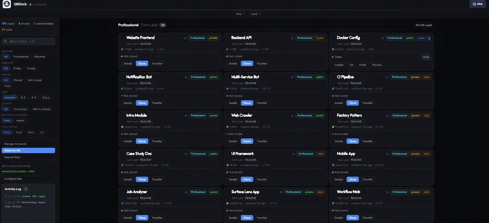

Your Git projects.
One Space.
Stop wasting time switching between accounts, tabs, and terminals. Search, organize, and operate on all your repos from one local interface.

The problem
Keeping Git projects organized is a daily tax.
Whether you manage one account or several, you've felt this pain.
Constant context switching
Jumping between repos, tabs, terminals, and sometimes accounts. Too much friction for simple daily actions.
Repos scattered everywhere
No overview, no consistency: you waste time looking for "that repo".
Uncommitted work goes unnoticed
Staged, dirty, ahead/behind: you only notice when it's inconvenient.
Repetitive repo chores
Clone, pull, fetch, open editor, open terminal: repeated across accounts and repos.
Features
Everything you need. Nothing you don't.
Keep it fast. Keep it local. Keep it built for daily repo management.
Project Dashboard
One view for all your repositories. Works great with one GitHub account, and supports multiple accounts when you need it.
Clone Anything (by URL)
Paste any GitHub repo URL, choose which account key to use, and clone into your organized structure. Optional custom local folder name included.
Full Git Workflow
Commit, push, pull (with rebase), branch, revert, plus diff (staged/worktree), stash, and discard actions in one Git modal.
Needs-Attention Panel
Instantly see dirty repos, staged changes, and ahead/behind status. Optional dormant detection flags repos with no recent activity.
Transfer & Migrate
Transfer repos between accounts and migrate existing local repos into the organized structure. GitDock updates remotes for your SSH host aliases.
Multi-machine Hub
Optional central view for multiple machines. See the Hub section for overview, sync issues, and per-machine repo browsing.
Multi-machine
One dashboard per machine. One Hub for all.
Multiple machines, no single overview. The Hub fixes that: a small server that collects status snapshots from each machine. Self-host for free or use hub.gitdock.dev.
All machines in one place
List of connected machines, last seen, and repo count. Click any machine to see its repos.
Sync issues at a glance
Unpushed commits, behind remote, dirty repos: see what needs attention before it bites.
Repos with search & filters
Per machine: search by name, filter by status (clean, dirty, ahead, behind). View as cards or list.
How it works
Up and running in minutes.
No cloud. No subscription. Git + GitHub CLI (gh) + SSH on your machine. The standalone zip does not require Node.js.
Download and run
Get the release zip from Download (or clone the repo). Run the app; it opens at localhost:3847. On first launch, choose a workspace folder.
Add GitHub account(s)
In the dashboard, use Add Account and the setup guide: SSH key, verify SSH, and a GitHub token. gh auth login is optional if you connect with a PAT.
Manage repos fast
Search, pin, clone (including by URL), pull/fetch/commit/push, transfer, and open repos in your editor, all from one dashboard.
Connect to the Hub
Using several machines? In the dashboard, set the Hub URL and API key, then restart. Open the Hub in the browser to see all machines and sync status in one place.
Security first
Your data stays on your machine. Period.
Local-only by design, with strict input and path controls.
Network
- Local-only serverBinds to
127.0.0.1only. Other IPs are rejected.
Application
- Input & path hardeningSanitized repo names, branches, paths, and messages; traversal protection on every file operation.
Credentials
- Tokens stay localNot in
config.json.ghkeyring or optional PAT (session or OS store). Never sent to GitDock. - Serialized API calls
ghqueued per account — no races when switching accounts.
Works with your tools
Open repos directly in your favorite editor.
Ready to take control?
Free and open source. Download the zip (no Node.js) or clone the repo. All your repos, organized in one dashboard.